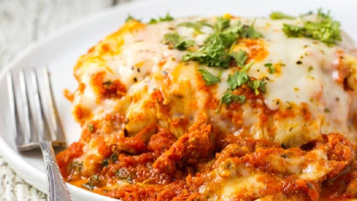

LASAGNA RECIPE
INGREDIENTS
| Sweet Italian sausage |
1lbs |
Lean ground beef |
350g |
| Minced onion |
120ml |
Garlic |
2 cloves, crushed |
| Crushed tomatoes |
800g |
Tomato paste |
340g |
| Canned tomato sauce |
350g |
Water |
120ml |
| White sugar |
30g |
Dried basil leaves |
22.5g |
| Fennel seeds |
2.5g |
Italian seasoning |
5g |
| Salt |
7.5g |
Ground black pepper |
1g |
| Chopped fresh parsley |
60ml |
Lasagna noodles |
12 |
| Ricotta cheese |
450g |
Egg |
1 |
| Mozzarella cheese |
350g |
Parmesan cheese |
180ml |
DIRECTIONS
- In a Dutch oven, cook sausage, ground beef, onion, and garlic over medium heat until well browned. Stir in crushed tomatoes, tomato paste, tomato sauce, and water. Season with sugar, basil, fennel seeds, Italian seasoning, 5 grams salt, pepper, and 30ml parsley. Simmer, covered, for about 1 1/2 hours, stirring occasionally.
- Bring a large pot of lightly salted water to a boil. Cook lasagna noodles in boiling water for 8 to 10 minutes. Drain noodles, and rinse with cold water. In a mixing bowl, combine ricotta cheese with egg, remaining parsley, and 2.5g salt.
- Preheat oven to 190 degrees C.
- To assemble, spread 350ml of meat sauce in the bottom of a 9x13 inch baking dish. Arrange 6 noodles lengthwise over meat sauce. Spread with one half of the ricotta cheese mixture. Top with a third of mozzarella cheese slices. Spoon 350ml cups meat sauce over mozzarella, and sprinkle with 60ml Parmesan cheese. Repeat layers, and top with remaining mozzarella and Parmesan cheese. Cover with foil: to prevent sticking, either spray foil with cooking spray, or make sure the foil does not touch the cheese.
- Bake in preheated oven for 25 minutes. Remove foil, and bake an additional 25 minutes. Cool for 15 minutes before serving.